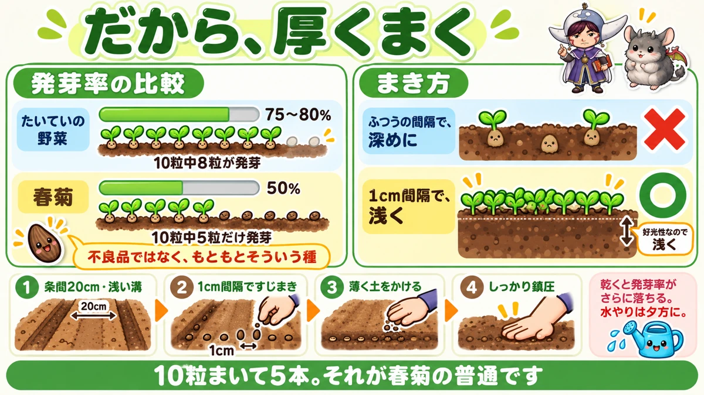
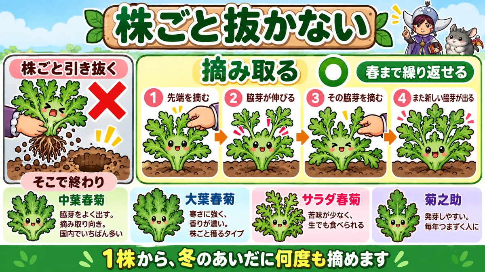
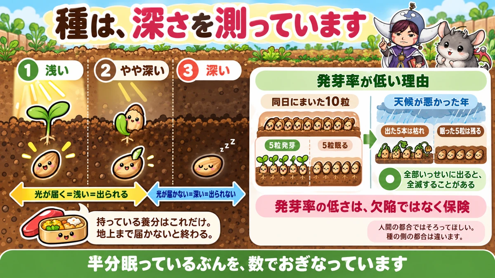

Only half the seed comes up 🌿 Which is why sowing thickly is correct
🌿 "I sowed a whole row and got a scattering."
🌿 "I cut it once in autumn and that was the end of it."
🌿 "I buy it every time and it isn't cheap."
Hello, I'm Eiko. Eight years of growing vegetables organically and without pesticides, and a teaching licence in science.
Chrysanthemum greens — the hardest-working leaf crop of the winter. Done properly, you pick from them until spring.
One thing to know first:
Germination is about 50%.
Half coming up is normal. It isn't you 🌿
The basics
- Family: daisy family (related to lettuce and salsify — not a brassica)
- Sow: late summer for an autumn crop, or early spring
- Harvest: from autumn right through to the following spring
The autumn sowing is easier
It likes cool weather. Spring sowing works, and autumn is easier.
The temperatures are definite:
- 15–20 °C for both germination and growth
- above 35 °C, germination falls sharply
- above 30 °C, growth stops
So sowing while it's still hot is wasted seed.
The window has ends on both sides
- Too early — too hot, nothing germinates
- Too late — it won't bulk up before winter
Aim for the point where the heat has broken but there are still weeks of growing weather.
Starting from 50%

What this diagram says （図解の文字）
- So you sow thickly
- Germination compared — most vegetables 75–80%, eight of ten seeds ／ chrysanthemum greens 50%, five of ten
- Not defective. That's simply what the seed is
- × normal spacing, sown deep ／ ○ 1 cm apart, sown shallow — it needs light, so shallow
- Rows 20 cm apart, shallow drills
Most vegetable seed is quoted at 75–80% or better. This is about 50%.
Sow ten, get five. Not a faulty packet — that's the seed.
I re-sowed repeatedly in my first years assuming I was doing something wrong 😅 I wasn't.
So sow thickly
Thicker than you would anything else — 1 cm apart is fine. Densely.
The seed is cheap and comes in quantity, so be generous. Too many up is solved by thinning.
And shallowly
The other important property: it germinates poorly without light.
So keep the drill shallow. Sown deep, an already low germination rate drops further.
The method
- Shallow drills, rows 20 cm apart
- Sow along the row at about 1 cm spacing
- Cover thinly
- Firm it down well
Don't skip the firming. Dry soil lowers germination further still, so press the covering down with your palm and put seed and soil in contact.
Water in the evening while the weather is still warm; avoid the middle of the day. If water is awkward to carry, sow around a forecast of rain.
Don't pull the plant up

What this diagram says （図解の文字）
- Don't pull the whole plant
- × pulled up — that's the end of it ／ ○ picked — repeatable until spring
- 1 pick the tip → 2 side shoots extend → 3 pick those → 4 more side shoots come
- Nakaba type — produces side shoots freely, suits picking, the commonest type
- Ōba type — hardier…
The most wasteful way to harvest is pulling the plant up. It's sold root-and-all in shops, so that seems to be how it works.
It isn't:
- Pick the growing tip
- The plant responds with side shoots
- Pick those
- More side shoots come
Repeat and you pick until spring.
I've counted: five or six pickings from one plant over a winter. You go out and take what you need, and you stop buying it.
Choose a variety that suits picking
- Medium-leaf type — the commonest; disease-resistant and produces side shoots freely. The one for picking
- Large-leaf type — hardier, stronger scent; harvested as a whole plant
- Salad type — little bitterness, good raw
Picking repeatedly → medium leaf. Scent → large leaf. Dislike bitterness → salad type.
Plant it between the brassicas
In the rotation article the rule was don't put brassicas next to brassicas — and that inserting a daisy-family or carrot-family crop between them reduces pests.
This is that daisy-family crop.
Because of the scent
It has a distinctive smell, and pests dislike it. So it gets almost no insect damage itself, and it protects its neighbours.
Where to put it
Between rows of cabbage, Chinese cabbage or mooli. Alternate rows, or between individual plants.
I run one row of it between each pair of Chinese cabbage rows, and caterpillar damage is clearly reduced.
One caution: it spreads sideways more than you expect. Squeeze it in too tightly and it gets cramped later. Leave a little room.
The science: a small seed measuring its depth 🔬

What this diagram says （図解の文字）
- The seed is measuring its depth
- 1 shallow ／ 2 fairly deep ／ 3 deep
- Light reaches = shallow = it can get out ／ no light = deep = it can't
- It has only the reserves it carries. If it can't reach the surface, that's the end
- Why germination is low — of ten seeds sown on one day, five germinate and five stay asleep
Why it needs light
A seed reaches the surface on the reserves it carries, and nothing else can be added. If those reserves run out before it gets there, that's the end of that seed.
And chrysanthemum green seed is very small — it carries very little.
So it uses light as a ruler
- Light reaching it = it's shallow = it can make it
- No light = it's deep = it can't
So it waits until it senses light. Light-requiring germination is a seed measuring how deep it is.
And the low rate is a strategy
Why only half? If every seed germinated at once, bad weather would take all of them.
Splitting into ones that germinate and ones that wait means something survives either way.
Inconvenient for us, advantageous for the plant. The low germination rate is insurance, not a defect.
Which makes thick sowing make sense: you're making up with numbers for the half that's asleep ☺️
To sum up
- ✅ Daisy family — related to lettuce, not a brassica
- ✅ The autumn sowing is easier
- ✅ 15–20 °C for germination and growth; above 30 °C growth stops
- ✅ Sow once the heat has broken, with weeks of growing left
- ✅ It dislikes acid soil — lime is not optional
- ✅ Germination is about 50%. That's normal
- ✅ So sow at about 1 cm spacing
- ✅ It needs light, so sow shallow
- ✅ Firm the covering down well
- ✅ Water in the evening
- ✅ Pick the tips; don't pull the plant. Five or six pickings a winter
- ✅ Medium-leaf type for repeated picking
- ✅ Plant it between brassicas — the scent keeps pests off both
- ✅ Leave room; it spreads
- ✅ The low germination rate is the seed's insurance policy
You don't have to do all of it. Sow one short row, far thicker than feels right. Half of it will come up, and that's the row you wanted 🌿
Thank you for reading!